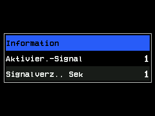

Motorsensoren des Gebläseantriebs
Die fünf Sensoren eines separaten Gebläsemotors am Hectare Mini – Zündung, Öldruck-Störung, Batterieladung, Kraftstoffmangel, Luftfilter –, ihre zwei Einstellungen und wie der Zündungssensor die übrigen freigibt.
Drillmaschinen, deren Gebläse einen eigenen Motor antreibt, können diesen Motor mit bis zu fünf Schaltsensoren an einem Eingangsmodul überwachen. Jeder wird einzeln im Profil eingetragen. Alle fünf haben dieselben zwei Einstellungen und denselben Statusbildschirm; sie unterscheiden sich darin, was das Signal bedeutet.

| Parameter | Ebene | Was er bewirkt | Bereich · Werkseinstellung |
|---|---|---|---|
| „Aktivier.-Signal“ | Agronom | Der Pegel am Eingang, 0 oder 1, der den Zustand in der Tabelle unten bedeutet. | 0 / 1 · 1 |
| „Signalverz., Sek“ | Agronom | Wie lange der Eingang seinen neuen Pegel halten muss, bevor das Panel die Änderung annimmt – gegen Fehlauslösung durch Vibration oder Wackelkontakt. | 1 … 30 s · 1 s; „Wenig Kr.“ 15 s, „Luftfilter“ 5 s |
| Sensor | Das Aktivierungssignal bedeutet | Alarm |
|---|---|---|
| „Zündung“ | Die Zündung des Gebläsemotors ist eingeschaltet. | keiner – siehe unten |
| „Öldruck-Störung“ | Der Öldruck des Motors ist zu niedrig. | ja, nur bei eingeschalteter Zündung |
| „Batt. lädt nicht“ | Die Batterie wird vom Motor nicht geladen. | ja, nur bei eingeschalteter Zündung |
| „Wenig Kr.“ | Im Tank des Motors ist wenig Kraftstoff. | ja |
| „Luftfilter“ | Der Luftfilter des Motors ist verschmutzt. | ja |
Die Werkseinstellungen von „Signalverz., Sek“ für „Wenig Kr.“ und „Luftfilter“ werden gesetzt, wenn der Sensor auf seine Standardwerte zurückgesetzt wird.
Wie der Zündungssensor die übrigen freigibt
Der Zündungssensor löst keinen eigenen Alarm aus. Er hält die Sensoren für Öldruck und Batterieladung ruhig, solange der Motor aus ist – bei ausgeschalteter Zündung sind niedriger Öldruck und fehlende Ladung normal. Solange der Zündungssensor überwacht wird, antwortet und Zündung aus meldet, bleiben diese beiden ruhig. Wird der Zündungssensor nicht überwacht oder antwortet er nicht, melden sie unabhängig vom Zustand der Zündung.
Darum sollten „Öldruck-Störung“ und „Batt. lädt nicht“ nur zusammen mit „Zündung“ im Profil stehen und zusammen mit ihr herausgenommen werden.
Auf dem Startbildschirm ist die Zündungsanzeige gelb, solange die Zündung aus ist, und grau, solange sie an ist – siehe Anzeigen.
Der Statusbildschirm
Zeigt Pin: mit dem aktuellen Pegel am Eingang, "0" oder "1" – vergleichen Sie ihn mit dem tatsächlichen Zustand des Motors, um „Aktivier.-Signal“ einzustellen. Siehe Der Sensor-Statusbildschirm.

Die Alarme und was zu prüfen ist: Motoralarme.
Ihre Maschine tut etwas, das diese Seite nicht beantwortet? Schreiben Sie an support@agriwelt.com — es antwortet ein Ingenieur.